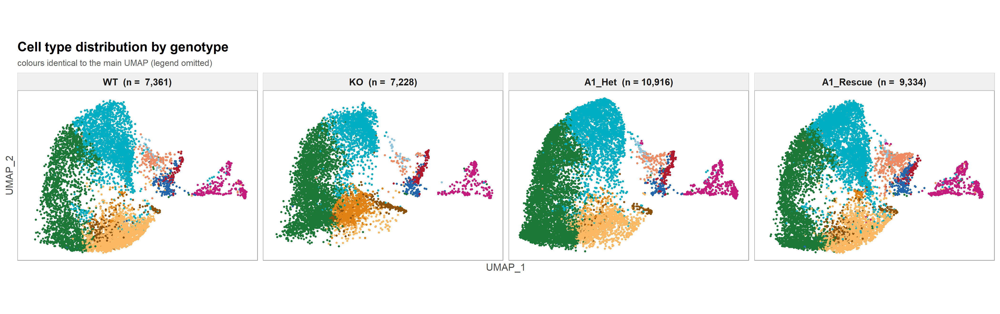
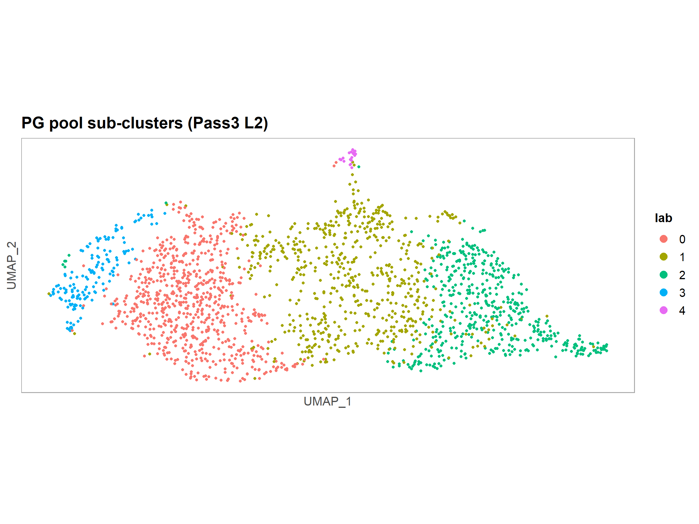

上游为测序公司返回的 Cell Ranger 6.0.1 标准结果（mm10-2020-A，Single Cell 3' v3）。本版流程与旧版最大的差别之一是不再"零过滤"，而是按已发表文献做两层细胞过滤：
| 层 | 规则 | 依据 |
|---|---|---|
| 层 1 | percent.mt < 20%（按全部基因计算） | 肠类器官 scRNA 主流档位（PMC11987515 / PMC13394574 / BMC Methods 2025）；10–15% 会系统性优先删除 Paneth/Goblet |
| 层 2 | 删除 ^mt- 与 ^Rp[sl] 基因后，要求 nCount ≥ 2000 且 nFeature ≥ 250 | Nat Commun 2023;14:5093 Methods 原文（"empty droplets" 判定） |
| 基因层 | 表达细胞数 < 3 的基因丢弃 | 同上（"genes expressed in fewer than three cells were discarded"） |
n_cells_cr = Cell Ranger 判定的细胞数；pass_mt = 通过层 1；pass_all = 两层 + 基因层后进入下游的细胞数（下游全部分析的分母）；median_* 为过滤后中位数。
横轴为 raw 矩阵中全部 barcode 按 UMI 数排序的序号（含背景液滴），绿色段为 Cell Ranger 判定为细胞的部分。绿/灰分界清晰说明 cell calling 合理；本流程的额外过滤发生在 cell calling 之后。
测序公司返回的官方 web_summary（比对率、饱和度、barcode/UMI 质量等），与第 1 节的两层过滤互相独立。
Seurat v5 标准流程：NormalizeData → FindVariableFeatures(2000) → ScaleData → PCA(50) → UMAP（使用前 30 PCs）→ 聚类，分辨率扫描 0.05–0.80（步长 0.05）。按 NC2023 复刻口径，取扫描中第一个恰好得到 8 簇的分辨率，即 res = 0.3（8 簇）。
分辨率扫描图（clustree）因 clustree 与当前 ggplot2 版本不兼容未出图，各分辨率聚类结果均保留在对象元数据 clusters_res* 列。
注释采用"簇级打分 + argmax"，marker 全部来自已发表文献面板（详见 scripts/README.md 第 4 节）：Pass 1 用 NC2023 Fig.4k 的 18 个 marker 做全局 6 粗分类；Pass 2 把总 Enterocyte 池单独二次聚类，拆成三段成熟梯度；Pass 3 把 Paneth-Goblet 池二次聚类三分后，再对 PG 亚群做第三次聚类二分前体。
| 层 | 做法 | 结果 |
|---|---|---|
| Pass 1 | 8 簇 × 6 面板（Stem cell / TA / Enterocyte / EEC / Tuft cell / Paneth-Goblet）求平均 z-score，簇级 argmax | Stem cell、TA、Enterocyte、EEC、Paneth-Goblet（Tuft 无簇胜出） |
| Pass 2 | Enterocyte 池（7,395 cells）二次聚类 res 0.2 → 5 亚簇 × 三面板 argmax | Imm ent / Cybrd1+ ent / Fabp1+ ent |
| Pass 3 | Paneth-Goblet 池（2,035 cells）二次聚类 res 0.3 → 5 亚簇，按 D = median(G) − median(P) 三分（|D| > 0.30）；剩余 PG 亚群三次聚类（res 0.08，2 群） | Paneth / Goblet / Pre-Paneth / Pre-goblet |


DotPlot 的颜色是"每基因在细胞类型间归一化后的相对表达"，用来看行内差异；绝对表达量请看 marker_DotPlot_values.csv（含 pct / avg / rel / z 四列）。
% 为该细胞类型在该基因型自身通过过滤的细胞中的占比（分母见第 1 节）；n_CELLS 为四基因型合计。
score = 该簇在胜出面板上的平均 z-score，margin = 与次优面板的差值；margin < 0.1 的簇建议人工复核（簇 1 margin 0.002 属典型"弱信号"簇）。
下载 Pass1 簇级分配表 下载簇 × 面板打分矩阵 下载簇 × marker 检出率 下载 Enterocyte 亚簇分配 下载 PG 亚簇分配（含 D 值） 下载 PG 第三次聚类逐细胞表 下载细胞类型组成表 下载 DotPlot 数值表 查看注释运行记录
共 11 个层级（Global 全细胞汇总 + 10 个细胞类型）× 5 组对比，阈值 padj < 0.05 且 |log2FC| ≥ 0.25。对比设计：KO vs WT（敲除效应）、A1 Het vs WT（A1 单倍剂量不足）、A1 Rescue vs KO（设计性挽救对比：回补库 vs KO 背景）、A1 Rescue vs A1 Het（A1 剂量效应）、A1 Rescue vs WT（回补后与野生型的残余差异）。
挽救基因模式（同时满足：KO vs WT 显著 + A1 Rescue vs KO 显著反向 + 回补后向 WT 靠拢）：8,047 个"基因 × 细胞类型"组合（候选池 100,535 行），完整表见下载。
下载全量 DEG 表（全部检测基因 × 5 对比 × 11 层级，约 91 MB） 下载挽救基因模式表 下载 DEG 数量汇总 查看伪重复统计设计说明
富集按 细胞类型 × 对比 × 方向 逐格进行：输入是该格 up_in_<组> 的显著基因（padj < 0.05 且 |log2FC| ≥ 0.25，且该方向 ≥ 10 个基因才做），universe 为该细胞类型该对比下通过 filterByExpr 的全部检测基因；GO 用 org.Mm.eg.db（BP / CC / MF 分开），Hallmark 与 Reactome 走 msigdbr，KEGG 走本地快照库（mmu，368 条通路 / 41,993 个 gene-pathway 对，2026-11-07 下载）。
理论格数 = 11 细胞类型 × 5 对比 × 2 方向 = 110；无通过阈值词条的格子不会出图（不是出错），切换时页面会显示占位说明。dotplot 横轴为 Gene ratio（已换算成 0–1 数值比例），颜色 = −log10(adj.P)，点径 = 命中基因数，面板内按 Gene ratio 降序。
文件名规则：enrichment/<细胞类型>/<对比>/<方向>/<基因集>_dotplot.pdf，可直接在目录里按此路径取原图。
Monocle3 拟时序：根细胞按规则 R1 选定单个细胞 —— 在 Stem cell 群内取 StemScore（Lgr5 / Olfm4 / Ascl2 / Smoc2 / Axin2 模块）最高的细胞（A1_Het_TGACCCTGTGCCTTTC-1）；learn_graph 在细胞周期回归后的 PCA 空间进行（ncenter=150，minimal_branch_len=10），展示仍用原 pipeline UMAP。方向正确性自检：P(TA > Stem) = 0.662，Cliff's δ = 0.323，即 TA 的拟时序整体大于 Stem，符合 Stem → TA 的分化方向。pseudotime 为图伪时间原始值（约 0–110），分轴图配色在 p98 = 87 处截断。
CellChat v2 按四基因型（WT / KO / A1_Het / A1_Rescue）分别推断配体-受体通讯，合并后比较。每组 n=1，结果为描述性（无统计检验）。本数据共检出 44 条信号通路（四基因型并集），其中 30 条在四个基因型中都有；TGFb / TNF / CXCL / FGF 在任何基因型都未检出显著互作（不是绘图失败）。
每个 L-R pair 在四基因型间的通讯概率。共 37 条通路可出图（按字母序）；另有 7 条（ADGRE / HSPG / NCAM / PTPR / Prostaglandin / SEMA3 / THBS）只在部分基因型检出，CellChat 合并出图会触发库内部 bug，已跳过并记录在 bubble_skipped_pathways.txt，单对象出图正常。
SenMayo 衰老基因集（22 个候选 marker，取与表达矩阵的交集后按细胞求均值）在四基因型间的细胞级评分分布：
全部文件与本 index.html 位于同一 showcase 目录内，打包整个目录后在本地浏览器（Chrome / Edge 推荐）可直接查看；所有图件与表格均直接取自 sc_10x/downstream/ 当前结果，未做二次加工。
图件以浏览器内置 PDF 阅读器内嵌显示（与旧版报告一致）；若某个内嵌框空白，说明当前浏览器/预览器未启用 PDF 插件，点每张图下方的"在新标签页打开当前图 ↗"即可直接查看 PDF。
合计 750 个文件，约 191.0 MB（其中全量 DEG 表约 91 MB、Cell Ranger web_summary 约 19 MB、轨迹 PDF 约 20 MB）。